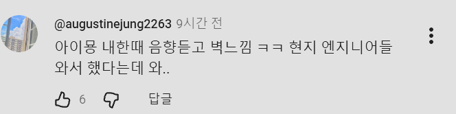
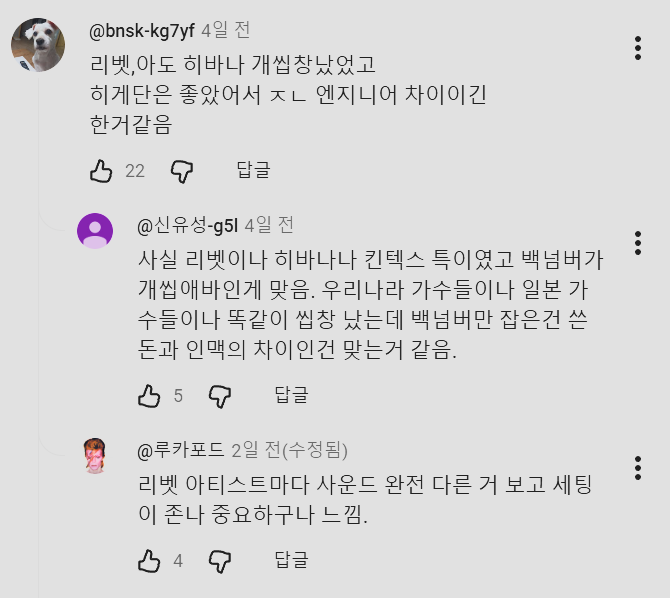

악명이 자자한 킨텍스에서
엔지니어들이 음향 잡아낸것을
체험한 성시경영상
일본이 아직까지는
기술의 노하우가 많은듯
근데 음향은 잘 잡았는데
백넘버 보컬이 토요일 공연때 존나 무리해서
일요일날 목이 나갔나봄 ㅋㅋㅋㅋㅋㅋㅋㅋ


악명이 자자한 킨텍스에서
엔지니어들이 음향 잡아낸것을
체험한 성시경영상
일본이 아직까지는
기술의 노하우가 많은듯
근데 음향은 잘 잡았는데
백넘버 보컬이 토요일 공연때 존나 무리해서
일요일날 목이 나갔나봄 ㅋㅋㅋㅋㅋㅋㅋㅋ
공연쪽에서는 일본이 넘사긴하지
갔다오신 분 말로는
토요일 공연 지렸는데 일요일 완전 맛갔다던데
그래서 혹시 토요일 끝나고 둘이 술마신거 아니냐라는 썰이 돌고있었음ㅋㅋ
백넘버 좋긴 한데, 쌩목이라 목 나갈 만하지...
킨텍스 진짜 음향 줘까이 구림 홀 안 자재 떨리는 소리도 들리고 진짜 쓰레기같아
도쿄돔 음향 조오온나 쓰레기인데 잘잡으려나
먹을텐데 보면 왜케 땅기냐 술이
와 소주를 글라스로 때리는건가
저양반이 주량으로 호동이햄 토하게 만듬
지금은 늙어서 줄은게 저정도
병이 아니라 짝으로 드셨다함
취할라고 먹는 건데 그정도 알코올 저항성은 불편 아니냐 ㅜㅜ
김희철이 강호동하고 성시경하고 술마시는데 소주 짝으로 시켜서 먹다 도망가서 자기집 화장실에서 잤데. 근데 아침에 일어났는데 성시경한테 전화와서 받았는데 자기 술마시고 있는데 나올거냐고 물어 봤다던데
존나 호러블 한 사연임 시발 ㅋㅋㅋㅋ
진짜 벽느껴짐
아쒸 아이묭 내한 킨텍스에서 하길래 음향 장소탓인줄 알고 안갔었는데
킨택스 너무 ㅈ같음 킨택스리서 안가는사람도 많더라
뭔가 더 말 하고 싶은데 삼키는ㅋㅋㅋㅋㅋ
음악은 확실히 일본이 넘사긴함. 규모도 그렇고
킨텍스 음향 개떡벽이던데 그걸 잡았다고
이제 이 아저씨 보면 그냥 누렁이밖에 생각 안남
ㄹㅇ
분야는 약간 다르긴 한데, 본인 일본 사는 자동차 관련 사운드 엔지니어인데, 다른데서도 이렇게 까지 하나? 싶을정도로 집착이 ㅈㄴ 심함.
킨텍스 공연 한번도 안가봣는데 어딜 가도 킨텍스욕밖에 없네 ㅋㅋㅋ
그야 제대로 된 공연장이 위치가 개병신인 인스파이어밖에 없는데 뭘 ㅋㅋㅋ
한국은 노래를 잘부른 가수들 목으로 때운게 아닐까
반대로 일본은 가수들 실력이 거지 같으니 음향빨로.. ㅋㅋ
과거에는 잘부르는 가수들이 많긴했는데
요즘에 보정이 너무 너무 잘되어있고 심해서
너도나도 다 잘부르는것처럼 보인다고
노래 좀 부른다 하는 가수들이 비판하기도함
일본 음방이나 이런곳들은 이상할정도로 음향보정을 안넣다시피
대충하더라
슈발 음향은 ㅈㄴ 잘 잡혔는데 보컬이 맛탱이 갔다 안카요 ㅠㅠ 슈발 토콘단 놈들 얼마나 텐션 올려놨길래 담날 콘서트 있는 양반이 목 나간거야.. 앵콜도 잘 안하던 양반을… as 하러 내한 와주쇼